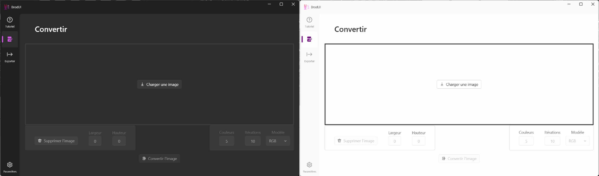
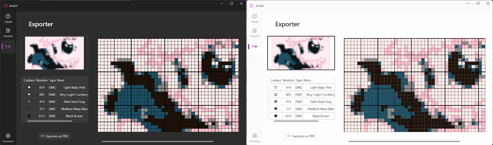
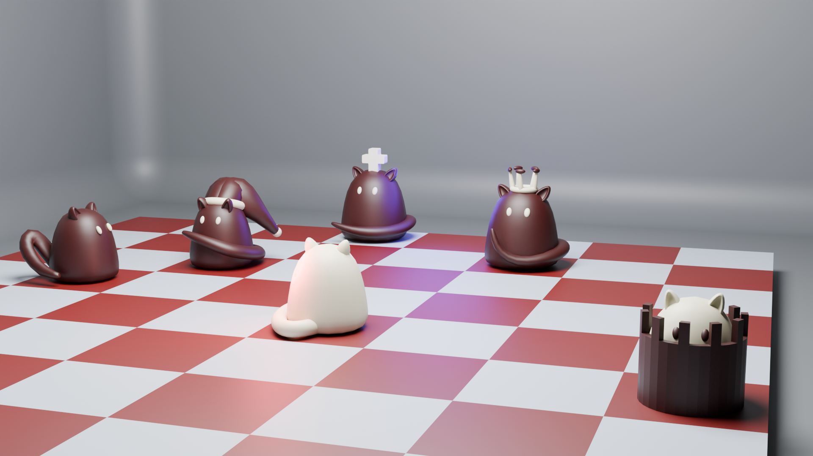

Ce projet a été réalisé seul et s'est déroulé entre Février 2021 et Mai 2021. Il a été codé en C puis en C++. Le code du projet est disponible ici.
Ce projet a été réalisé seul et s'est déroulé entre Novembre 2022 et Décembre 2022. Il a été codé en C++. Le code du projet est disponible ici. Il s'agit d'une version en 3D du jeu de la vie de Conway. On peut choisir la taille de la grille et le nombre de cellules vivantes au départ. Le jeu se déroule dans un terminal.
Ce projet a été réalisé en groupe de 6 personnes et s'est déroulé entre Février 2023 et Mai 2023. Il a été codé en C#. Le code du projet est disponible ici. Le logiciel permet de créer des patrons de broderie en point de croix. Il est possible de choisir le nombre de fils et la taille de la toile. On peut aussi importer une image pour la transformer en patron de broderie ainsi que exporter le patron en PDF. Les couleurs de l'image sont choisis en fonction des couleurs de fils DMC disponibles. On utilise l'algorithme de clustering K-means pour réduire les zones de couleurs.
 Ce projet a été réalisé en binôme et a été codé début Avril 2024 et n'a pas été terminé. Il s'agit d'un jeu style roguelike où le joueur comme les ennemis sont des pièces d'échecs. Le joueur peut devenir d'autre pièces. Le but est de finir les niveaux sans mourir. Il est en vue isométique du dessus.
